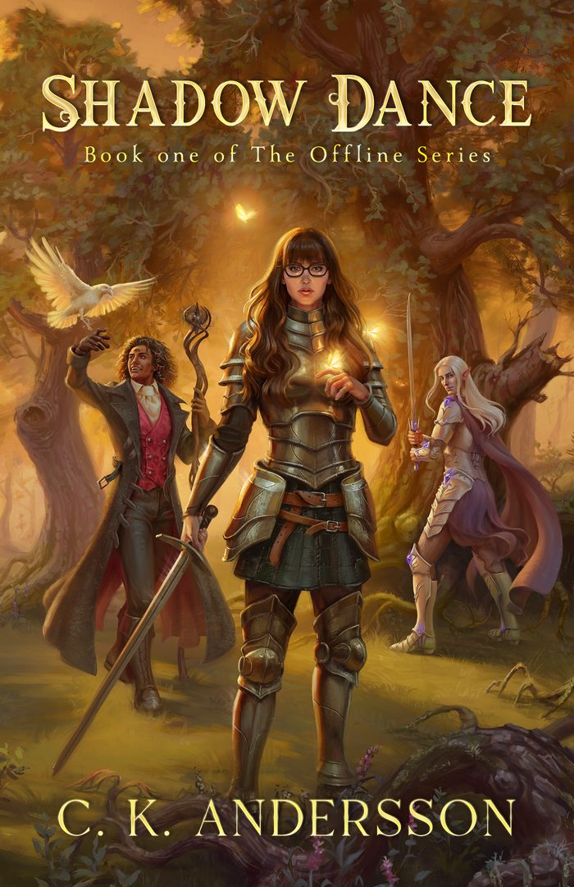
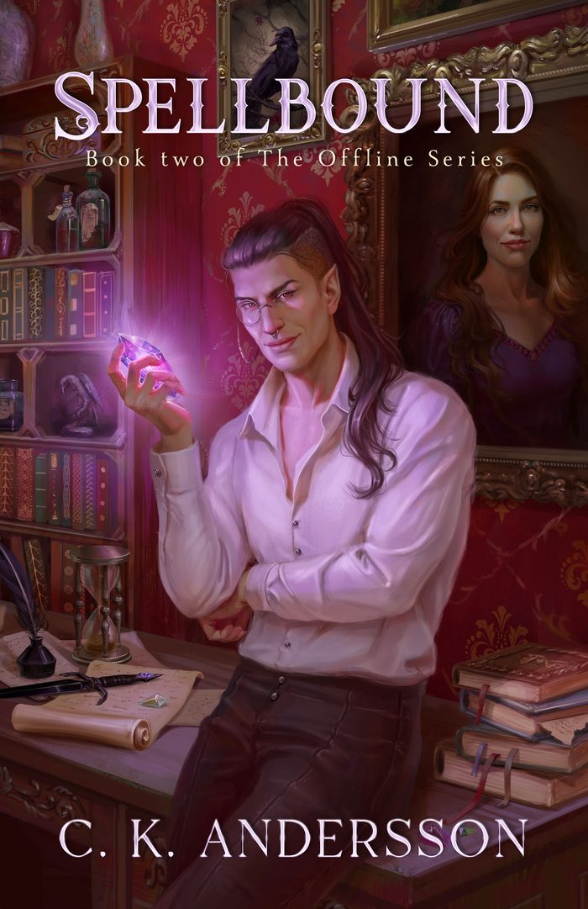
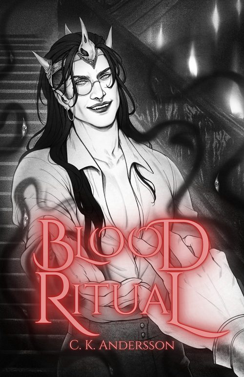

The Offline Series

Shadow Dance
Saga escapes her mundane life of modern stresses and anxieties, a failed relationship and a monotonous job by immersing herself in Reign Online, an MMORPG set in a fantastical world filled with magic and mystery.
When dark whispers begin to invade her mind, she is pulled through a rift into a world eerily reminiscent of the game she plays. Grand Prior Roseheart, the leader of a paladin order, is convinced she is the key to defeating the dark magic that blights the land. But is that all he sees in her?

Spellbound
Picks up where Shadow Dance left off. The dark whispers get louder, and the duology ends with ancient gods of chaos and darkness trying to pull Theadrath apart.

Blood Ritual
He would destroy the world, and anyone in it, for her. Lysander Duleon, a half-elf-turned-vampire, is searching for a way to subdue an ancient deity. It comes free when you join the newsletter, and the audiobook is free too.
Next up: Accidentally Fell in Love with a Raid Boss. Pre-orders come with a swag bag.
Hi, I'm C. K.
I write character-driven fantasy for adults, inspired by my favourite computer games and D&D. Sprinkles of magic, swoon-worthy romantic subplots, and realistic, flawed characters. Mental health matters in my books, and so do strong women who grow.
I was a refugee child, raised in Östergötland (so yes, I speak proper östgötska). I've lived in the UK with my British partner since 2017. Before this I worked with immigration and unaccompanied children, did localisation testing on video games, streamed on Twitch and walked dogs for a living.
I've known I wanted to be an author since I was seven. So I decided to chase it.
- Mango, rescue dog
- Merlin and Uther, rescue cats
- Warhammer minis, painted with my partner
- Baldur's Gate 3, on permanent rotation
- Kailunn's own scent, made by Castle Door
Come and find my table
Signed copies, art prints and event merch. Every paperback I sell myself has the author exclusive matt cover.
- 25 April 2027Fiction Fest UK, Bridgewater Hall, Manchester
- 8 May 2027Readers and Rebels, ICC Wales, Newport
- 29 and 30 May 2027HEA Fest, Aintree Racecourse, Liverpool
- 25 September 2027Lost In Pages, Brighton Hilton Metropole